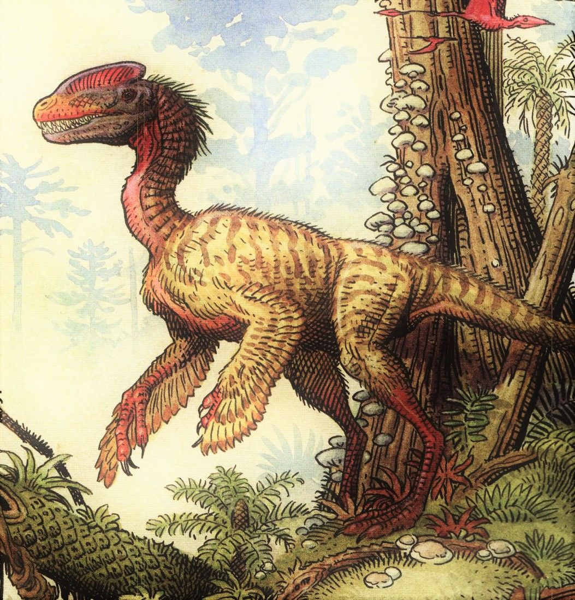
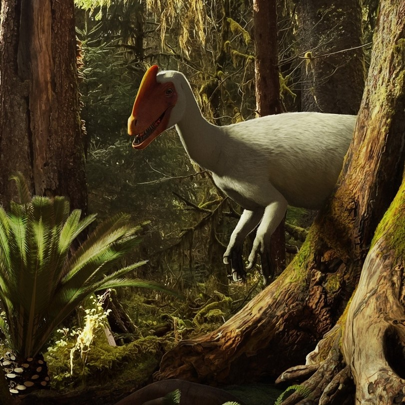
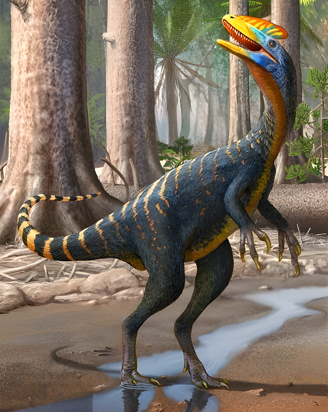
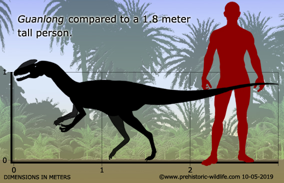
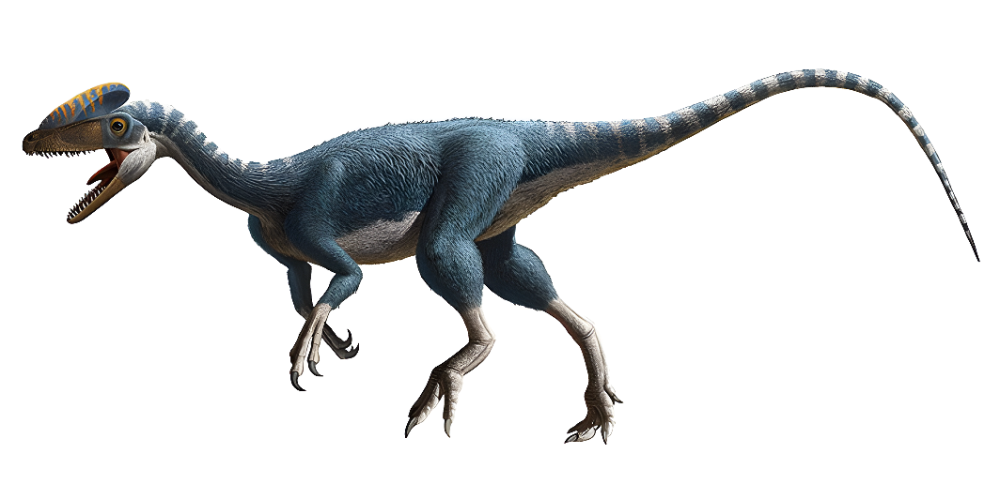
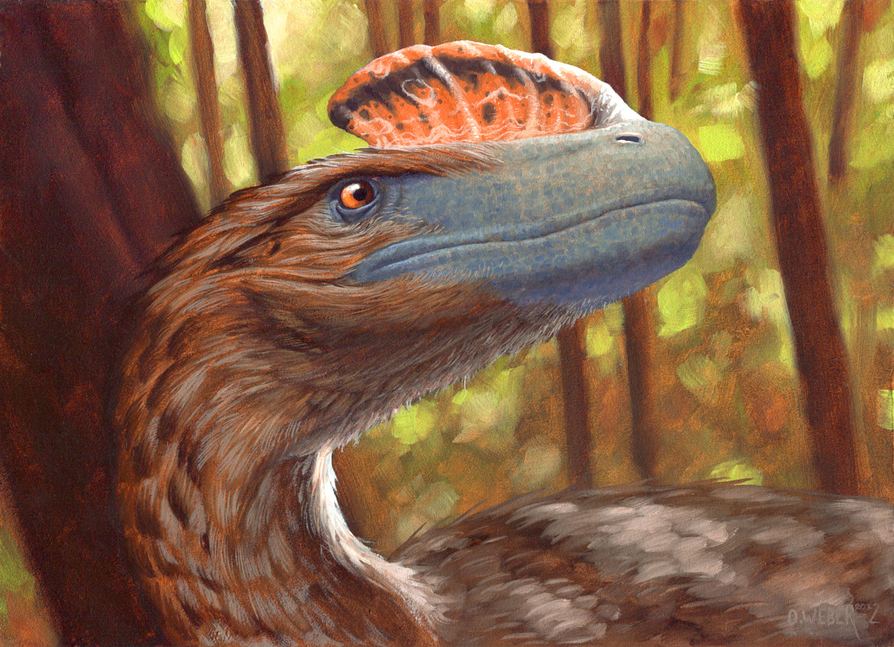
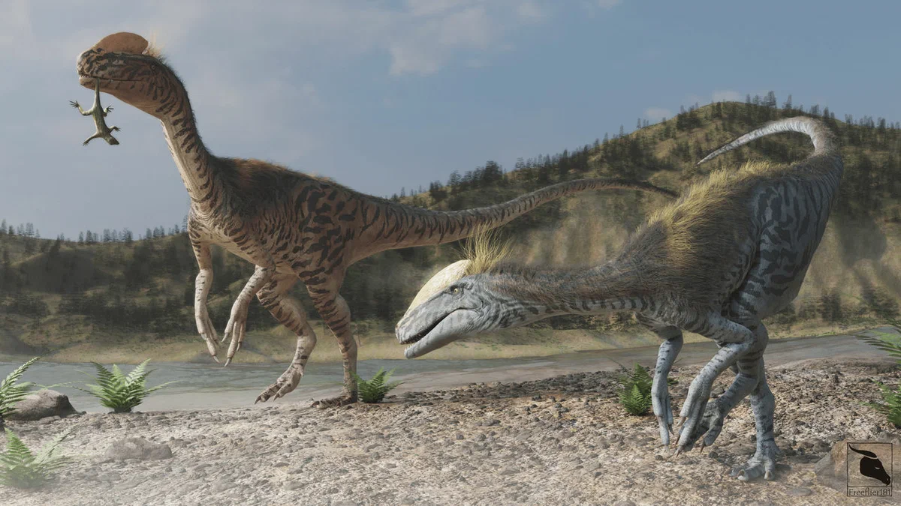
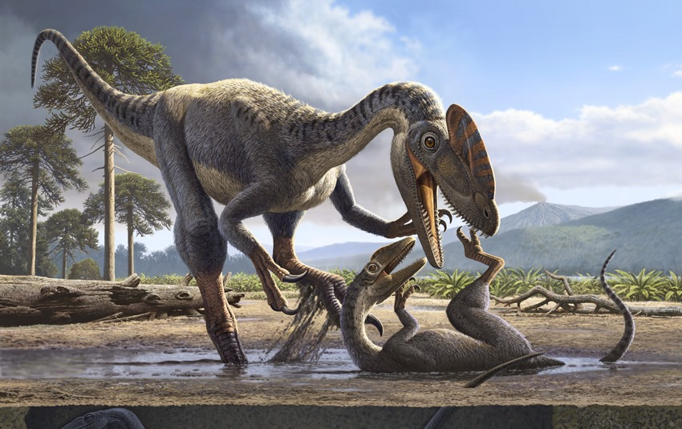
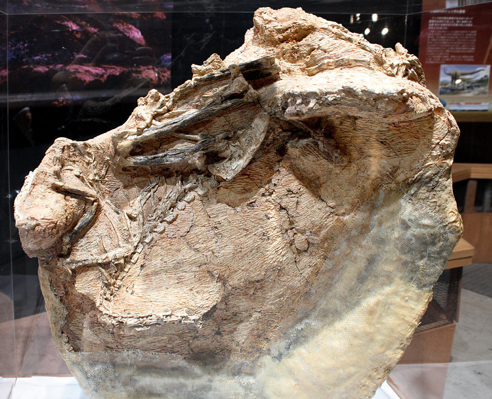

Guanlong
Ngũ Thái Quan Long kỷ Jura
Tổng quan
Kỷ
Jurassic
Họ
Proceratosauridae
Chi
Guanlong
Dài
3 m
Cao
1.2 m
Nặng
90 kg
Thức ăn

Guanlong là một loài khủng long chân thú thuộc siêu họ Tyrannosauroidea sống ở Trung Quốc ngày nay vào Hậu kỷ Jura, trước khi một hậu duệ của nó là Tyrannosaurus xuất hiện.
Nguồn: wikipedia.org
Phân bố
Khu vực phía Đông Châu Á
Thông tin thêm về Guanlong
Kỷ nguyên
Guanlong sống vào đầu giai đoạn Hậu Kỷ Jura, hóa thạch của chúng được tìm thấy trong hệ tầng Shishugou có niên đại khoảng 160 triệu năm trước, cùng thời điểm với các Compsonathid và Maniraptoran, cho thấy sự phân nhánh trong quá trình tiến hóa của các khủng long Coelurosaur nói chung và các Tyrannosauroid nói riêng có thể còn xa xưa hơn.
Phân bố
Guanlong từng sống ở khu vực ngày nay là phía đông châu Á, chủ yếu được phát hiện nhiều ở Trung Quốc. Chúng sinh sống trong những khu rừng lá kim và dương xỉ khổng lồ, nơi khí hậu luôn thay đổi, với mùa hè ấm và ẩm ướt trong khi mùa đông khô lạnh.
Tên khoa học
Được đặt tên theo các từ tiếng Trung guan nghĩa là 'vương miện' và long nghĩa là 'rồng', liên quan đến đỉnh đầu hào nhoáng của nó, công phu nhất trong số các loài khủng long theropod đã biết. Tên loài Guanlong wucaii bắt nguồn từ từ wucai trong tiếng Trung có nghĩa là "Ngũ Thái Quan Long" và dùng để chỉ những tảng đá nhiều màu sắc ở Wucaiwan, vùng đất xấu nơi tìm thấy hóa thạch.
Kích thước
Guanlong là một loài khủng long bạo chúa nhỏ đến trung bình, chỉ xếp sau Dilong. Con trưởng thành chỉ cao khoảng 1,2 mét, dài khoảng 3 mét từ mõm đến đuôi và nặng khoảng 45 đến 90 kg. Kích thước nhỏ bé là một trong các đặc điểm khiến Guanlong giống với khủng long Coelurosaur hơn là các loài bạo long sau này.
Ngoại hình
Bên cạnh các đặc điểm chung của các khủng long thuộc siêu họ Tyrannosauroidea bao gồm cấu trúc răng hình chữ U ở xương tiền hàm hàm trên, hai xương mũi hợp lại làm một… Guanlong cũng mang nhiều đặc điểm sơ khai hơn ví dụ như có chi trước dài với ba móng vuốt ở mỗi “bàn tay”. Ngoài ra, một số đặc điểm của khung chậu cũng giống kiểu đặc trưng của các theropod giai đoạn kỷ Triass tới giữa kỷ Jura hơn là các loài sau đó (mặc dù các đặc điểm này vẫn hiện diện ở một số coelurosaur khác) và nó gần như chắc chắn có lông vũ.
Đỉnh đầu của Guanlong chạy dọc theo mõm, từ lỗ mũi đến hốc mắt. Nó rất mỏng manh (mỏng như bánh ngô và chỉ cao 5-6 cm), quá mỏng manh để sử dụng làm vũ khí và có thể có màu sắc sặc sỡ. Được làm từ xương mũi hợp nhất, mào chứa đầy các túi khí và nhắc nhở những người khám phá về các đặc điểm trang trí được tìm thấy trên một số loài chim còn sống, chẳng hạn như chim đầu mào và chim mỏ sừng. Mào của chúng có thể dùng để thu hút các Guanlong khác, đó là một đặc điểm khác thường ở một kẻ săn mồi.
Chế độ ăn
Guanlong là một loài ăn thịt. Chúng thường săn những con khủng long nhỏ hơn và các động vật có vú khác.
Trái với các hậu duệ của chúng đứng đầu chuỗi thức ăn, Guanlong cũng có thể trở thành bữa ăn cho các loài khủng long ăn thịt lớn hơn như loài Allosaur Yangchuanosaurus hay Monolophosaurus.
Khám phá
Năm 2002, các giáo sư Từ Tinh (Xu Xing) thuộc Viện Cổ sinh Động vật có xương sống và Cổ nhân loại học Trung Quốc và James M. Clark của Đại học George Washington trong chuyến khảo sát lần thứ sáu đến khu vực này đã khai quật được hai bộ hóa thạch của một loài khủng long ăn thịt chưa từng được biết đến trước đó. Điểm đáng chú ý là trên phần hộp sọ của các con vật đều có một cái mào tạo nên bởi các phần xương mũi hợp lại. Ở con non, phần mào tương đối nhỏ và chỉ giới hạn ở phần trước mũi, trong khi mào của con trưởng thành có kích thước lớn hơn rất nhiều.
Dựa vào đặc điểm này, vào năm 2006, loài khủng long này đã được giáo sư Từ Tinh và cộng sự mô tả và chính thức đặt tên là Guanlong wucaii (Ngũ Thái Quan long hay loài rồng có mào vùng Ngũ Thái). Bộ xương gốc hiện đang được trưng bày tại Viện Cổ sinh Động vật có xương sống và Cổ nhân loại học Trung Quốc.
